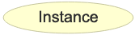
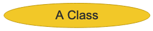
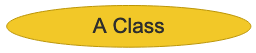

Key




Observation obs x has a special kind of result; res x which is a DescriptionResult has a "unit" and a value, Description & the textSite has a Geometry with one or more representations as coordinates or map references etcSite a sample of?Sample has a method of GRAB which is the same method listed by GA as "grab"
ex:107891
a sosa:Sample ;
ex:condition ex:DRY ;
ex:method ex:GRAB ;
ex:kind ex:OUTC ;
sosa:isSampleOf ex:93451
.
ex:93451
a ex:Site , geo:Feature ;
.